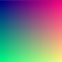

Your first 2D shader
Introduction
Shaders are special programs that execute on the GPU and are used for rendering graphics. All modern rendering is done with shaders. For a more detailed description of what shaders are please see What are shaders.
This tutorial will focus on the practical aspects of writing shader programs by walking you through the process of writing a shader with both vertex and fragment functions. This tutorial targets absolute beginners to shaders.
Note
If you have experience writing shaders and are just looking for an overview of how shaders work in Godot, see the Shading Reference.
Setup
CanvasItem shaders are used to draw all 2D objects in Godot, while Spatial shaders are used to draw all 3D objects.
In order to use a shader it must be attached inside a Material which must be attached to an object. Materials are a type of Resource. To draw multiple objects with the same material, the material must be attached to each object.
All objects derived from a CanvasItem have a material property. This includes all GUI elements, Sprite2Ds, TileMapLayers, MeshInstance2Ds etc. They also have an option to inherit their parent's material. This can be useful if you have a large number of nodes that you want to use the same material.
To begin, create a Sprite2D node. You can use any CanvasItem, so long as it is drawing to the canvas, so for this tutorial we will use a Sprite2D, as it is the easiest CanvasItem to start drawing with.
In the Inspector, click beside "Texture" where it says "[empty]" and select "Load", then select "icon.svg". For new projects, this is the Godot icon. You should now see the icon in the viewport.
Next, look down in the Inspector, under the CanvasItem section, click beside "Material" and select "New ShaderMaterial". This creates a new Material resource. Click on the sphere that appears. Godot currently doesn't know whether you are writing a CanvasItem Shader or a Spatial Shader and it previews the output of spatial shaders. So what you are seeing is the output of the default Spatial Shader.
Note
Materials that inherit from the Material resource, such as StandardMaterial3D and ParticleProcessMaterial, can be converted to a ShaderMaterial and their existing properties will be converted to an accompanying text shader. To do so, right-click on the material in the FileSystem dock and choose Convert to ShaderMaterial. You can also do so by right-clicking on any property holding a reference to the material in the inspector.
Click beside "Shader" and select "New Shader". Finally, click on the shader you just created and the shader editor will open. You are now ready to begin writing your first shader.
Your first CanvasItem shader
In Godot, all shaders start with a line specifying what type of shader they are. It uses the following format:
shader_type canvas_item;
Because we are writing a CanvasItem shader, we specify canvas_item in the
first line. All our code will go beneath this declaration.
This line tells the engine which built-in variables and functionality to supply you with.
In Godot you can override three functions to control how the shader operates;
vertex, fragment, and light. This tutorial will walk you through
writing a shader with both vertex and fragment functions. Light functions are
significantly more complex than vertex and fragment functions and so will not be
covered here.
Your first fragment function
The fragment function runs for every pixel in a Sprite2D and determines what color that pixel should be.
They are restricted to the pixels covered by the Sprite2D, that means you cannot use one to, for example, create an outline around a Sprite2D.
The most basic fragment function does nothing except assign a single color to every pixel.
We do so by writing a vec4 to the built-in variable COLOR. vec4 is
shorthand for constructing a vector with 4 numbers. For more information about
vectors see the Vector math tutorial. COLOR is both
an input variable to the fragment function and the final output from it.
void fragment(){
COLOR = vec4(0.4, 0.6, 0.9, 1.0);
}

Congratulations! You're done. You have successfully written your first shader in Godot.
Now let's make things more complex.
There are many inputs to the fragment function that you can use for calculating
COLOR. UV is one of them. UV coordinates are specified in your Sprite2D
(without you knowing it!) and they tell the shader where to read from textures
for each part of the mesh.
In the fragment function you can only read from UV, but you can use it in
other functions or to assign values to COLOR directly.
UV varies between 0-1 from left-right and from top-bottom.

void fragment() {
COLOR = vec4(UV, 0.5, 1.0);
}

Using TEXTURE built-in
The default fragment function reads from the set Sprite2D texture and displays it.
When you want to adjust a color in a Sprite2D you can adjust the color from the texture manually like in the code below.
void fragment(){
// This shader will result in a blue-tinted icon
COLOR.b = 1.0;
}
Certain nodes, like Sprite2Ds, have a dedicated texture variable that can be accessed
in the shader using TEXTURE. If you want to use the Sprite2D texture to combine
with other colors, you can use the UV with the texture function to access
this variable. Use them to redraw the Sprite2D with the texture.
void fragment(){
COLOR = texture(TEXTURE, UV); // Read from texture again.
COLOR.b = 1.0; //set blue channel to 1.0
}
Uniform input
Uniform input is used to pass data into a shader that will be the same across the entire shader.
You can use uniforms by defining them at the top of your shader like so:
uniform float size;
For more information about usage see the Shading Language doc.
Add a uniform to change the amount of blue in our Sprite2D.
uniform float blue = 1.0; // you can assign a default value to uniforms
void fragment(){
COLOR = texture(TEXTURE, UV); // Read from texture
COLOR.b = blue;
}
Now you can change the amount of blue in the Sprite2D from the editor. Look back at the Inspector under where you created your shader. You should see a section called "Shader Param". Unfold that section and you will see the uniform you just declared. If you change the value in the editor, it will overwrite the default value you provided in the shader.
Interacting with shaders from code
You can change uniforms from code using the function set_shader_parameter()
which is called on the node's material resource. With a Sprite2D node, the
following code can be used to set the blue uniform.
var blue_value = 1.0
material.set_shader_parameter("blue", blue_value)
var blueValue = 1.0;
((ShaderMaterial)Material).SetShaderParameter("blue", blueValue);
Note that the name of the uniform is a string. The string must match exactly with how it is written in the shader, including spelling and case.
Your first vertex function
Now that we have a fragment function, let's write a vertex function.
Use the vertex function to calculate where on the screen each vertex should end up.
The most important variable in the vertex function is VERTEX. Initially, it
specifies the vertex coordinates in your model, but you also write to it to
determine where to actually draw those vertices. VERTEX is a vec2 that
is initially presented in local-space (i.e. not relative to the camera,
viewport, or parent nodes).
You can offset the vertices by directly adding to VERTEX.
void vertex() {
VERTEX += vec2(10.0, 0.0);
}
Combined with the TIME built-in variable, this can be used for basic
animation.
void vertex() {
// Animate Sprite2D moving in big circle around its location
VERTEX += vec2(cos(TIME)*100.0, sin(TIME)*100.0);
}
Conclusion
At their core, shaders do what you have seen so far, they compute VERTEX and
COLOR. It is up to you to dream up more complex mathematical strategies for
assigning values to those variables.
For inspiration, take a look at some of the more advanced shader tutorials, and look at other sites like Shadertoy and The Book of Shaders.